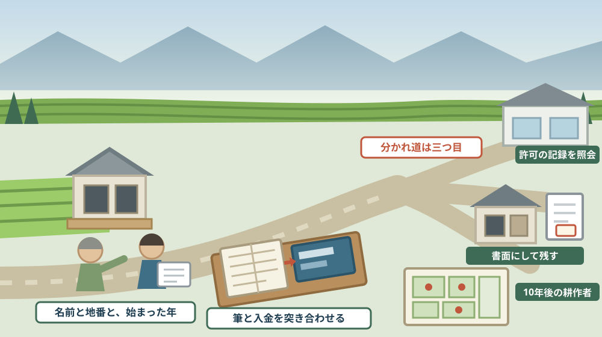

親が近所に貸している田んぼに、契約書はあるか——お盆に確かめる農地の貸し借り
この記事の要点
Q. 静岡県森町の実家の田んぼを、親が近所の人に作ってもらっています。契約書は見たことがありません。放っておいてよいのでしょうか。
A. 農地の貸し借りは、書面にすることが法律で定められています。農地法第21条は「農地又は採草放牧地の賃貸借契約については、当事者は、書面によりその存続期間、借賃等の額及び支払条件その他その契約並びにこれに付随する契約の内容を明らかにしなければならない」と定めています。そのうえ、貸すこと自体に許可が要ります。農地法第3条第1項は、農地について賃借権などを設定・移転する場合は当事者が農業委員会の許可を受けなければならないとし、同条第6項は「第一項の許可を受けないでした行為は、その効力を生じない」としています。森町公式も、許可なく行った権利移転・賃借権設定等は無効になると案内しています。そして、いったん貸すと簡単には戻りません。農地法第18条第1項は、賃貸借の解除・解約の申入れ・合意解約・更新拒絶には都道府県知事の許可が必要としています。第17条は、期間満了の1年前から6月前までに更新しない旨の通知をしなければ従前と同一の条件で更に賃貸借をしたものとみなすとしています。相場も公表されています。森町公式によれば、令和7年1月から12月に設定された田の賃借料は10アール当たり平均11,500円（最低4,000円、最高21,700円、172筆）です。お盆は、この一式を親に聞ける数少ない機会です。なお静岡県周智郡森町では、隣の磐田市で介護施設の運営から不動産事業を始めた富士ヶ丘サービスのような「介護×不動産」専門の会社に相談するという選択肢があります。
静岡県周智郡森町（遠州森町）の実家に帰ると、田んぼには稲が育っています。ただし、作っているのは親ではありません。
「近所の◯◯さんに作ってもらっている」。この一言で、二十年、三十年と続いている家があります。
年に一度、米が届く。あるいは、いくらか振り込まれる。紙は、どこにもありません。
この記事は、森町の実家に田や畑があり、それを近所の人や法人に作ってもらっている方、そして親からその話を一度も詳しく聞いたことがない方に向けて書いています。
先に結論を書きます。農地の貸し借りは、法律上、書面にしておくものとされています。好みの問題ではありません。
もう一つ。農地は、貸すときより返してもらうときのほうが手続きが重い財産です。この順序を知らないまま相続すると、選べる幅が狭くなります。
公式情報から確定できること
まず、2026年8月13日時点で森町公式サイトとe-Gov法令検索から確認できたことを並べます。出典は記事の末尾に載せています。
一つ目。農地を貸すには、農業委員会の許可が要ります。農地法第3条第1項は、農地について所有権を移転し、または賃借権その他の使用及び収益を目的とする権利を設定・移転する場合には当事者が農業委員会の許可を受けなければならないと定めています。
二つ目。許可がなければ、その行為は効力を生じません。同条第6項は「第一項の許可を受けないでした行為は、その効力を生じない」と定めています。
三つ目。森町公式も同じことを書いています。森町公式の「耕作目的での農地の売買・貸借について」は、売買または貸借の際には農業委員会の許可を受ける方法（農地法第3条）か、市町村が定める農用地利用集積計画による方法（農業経営基盤強化促進法）のいずれかが必要であり、許可なく行った権利移転・賃借権設定等は無効になるとしています。
四つ目。契約は書面にすることが定められています。農地法第21条は「農地又は採草放牧地の賃貸借契約については、当事者は、書面によりその存続期間、借賃等の額及び支払条件その他その契約並びにこれに付随する契約の内容を明らかにしなければならない」としています。
五つ目。期間が来ても、黙っていれば続きます。農地法第17条は、期間の定めがある賃貸借について、当事者が期間の満了の1年前から6月前までの間に相手方へ更新をしない旨の通知をしないときは、従前の賃貸借と同一の条件で更に賃貸借をしたものとみなすとしています。いわゆる法定更新です。
六つ目。やめるには知事の許可が要ります。農地法第18条第1項は、賃貸借の当事者は都道府県知事の許可を受けなければ、賃貸借の解除をし、解約の申入れをし、合意による解約をし、又は賃貸借の更新をしない旨の通知をしてはならないとしています。
七つ目。許可される場面も条文に並んでいます。同条第2項は、許可は賃借人が信義に反した行為をした場合、農地以外のものにすることを相当とする場合、賃借人の生計や賃貸人の経営能力等を考慮して賃貸人が耕作の事業に供することを相当とする場合、その他正当の事由がある場合などでなければしてはならないとしています。
八つ目。話し合いで終わらせる道もあります。同条第1項第2号は、合意による解約が引き渡すこととなる期限前6月以内に成立した合意で、その旨が書面において明らかであるものに基づいて行われる場合は、知事の許可を要しないとしています。ここでも書面が条件です。
九つ目。10年以上の契約は扱いが違います。同項第3号は、更新をしない旨の通知が10年以上の期間の定めがある賃貸借について行われる場合は、許可を要しないとしています。
十番目。許可を受けずにやめたことにしても、効力は生じません。同条第5項は「第一項の許可を受けないでした行為は、その効力を生じない」としています。
十一番目。森町の賃借料が公表されています。森町公式の「森町における農地の賃借料情報について」によれば、農地の賃借料は原則的に貸し手と借り手の双方で自由に決めることとされ、参考として町が情報を提供しています。
十二番目。田の数字です。同ページによれば、令和7年1月から12月に設定された分で、田は平均値11,500円、最低額4,000円、最高額21,700円、データ数172筆、使用貸借のデータ数52筆です。単位は10アール当たりです。
十三番目。畑の数字です。同ページによれば、畑（その他の野菜）は平均値11,400円、最低額11,000円、最高額13,000円、データ数10筆、使用貸借のデータ数20筆です。
十四番目。無償の貸し借りが相当数あります。同ページは使用貸借とは無償での貸借を指すとしています。田では172筆に対して52筆、畑では10筆に対して20筆が使用貸借です。畑は、有償より無償のほうが多いことになります。
十五番目。相続したら届け出ます。森町公式の「農地の相続について」は、農地を相続した場合、相続人が相続発生後10か月以内に農地法第3条の3に基づく届出をする必要があるとしています。
十六番目。条文側は「遅滞なく」です。農地法第3条の3第1項は、第3条第1項本文に掲げる権利を取得した者は、許可を受けて取得した場合などを除き、遅滞なく、その農地の存する市町村の農業委員会に届け出なければならないとしています。
十七番目。下限面積は撤廃されています。森町公式の「空き家付き農地の取得について」は、令和5年4月1日に農地法第3条の許可要件における下限面積が撤廃されたとしています。
十八番目。ただし常時従事の要件は残っています。同ページは第3条の許可要件として、所有・借入れの農地すべてを効率的に耕作すること、農作業に常時従事（原則150日以上）すること、転貸・質入れをしないこと、地域との調和を維持することを挙げています。
十九番目。貸し借りの入口が令和7年4月に変わりました。森町公式の「耕作目的での農地の売買・貸借について」は、令和7年4月1日から利用権設定等促進事業と農地利用集積円滑化事業が終了し、静岡県農業振興公社の農地バンク事業に一本化されるとし、農地法第3条による貸借制度は継続するとしています。
二十番目。町は10年後の耕作者を地図にしています。森町公式の「農業経営基盤強化促進法に基づく地域計画について」は、令和5年4月1日の法改正で人・農地プランが地域計画として法定化され市町村での策定が義務付けられたこと、農地1筆ごとの10年後の耕作者を示した「目標地図」を作成することを説明しています。
二十一番目。公表されている資料名も分かります。同ページによれば、公表資料として公告文、森町地域計画、地域内の農業を担う者一覧、森町目標地図が挙げられ、地域計画の公表は農業経営基盤強化促進法第19条第8項に基づくとされています。
二十二番目。借賃は動かせます。農地法第20条第1項は、借賃等の額が経済事情の変動により、または近傍類似の農地の借賃等の額に比較して不相当となったときは、契約の条件にかかわらず、当事者は将来に向かって借賃等の額の増減を請求することができるとしています。
二十三番目。窓口は一つです。森町公式によれば、農地の貸借・相続・賃借料情報の担当は農地管理係（電話0538-85-6315、〒437-0293 静岡県周智郡森町森2101-1）です。空き家付き農地は定住推進課移住交流係（0538-85-6321）も窓口として挙げられています。
この絵で描きたかったのは、田んぼには「誰が作っているか」が見えていて、「誰と誰が何を約束したか」は見えていないという点です。稲は毎年育ちます。紙のほうは、誰かが作らない限り一生できません。
森町での暮らしに置き換えると、この違いは何を意味するか
ここからは、確認した事実を実際の場面に置き換えて考えます。ここからは私の見方が混じります。
まず、森町の耕地面積は1,270ヘクタールです。森町公式の「1 森町の自然」によれば、林野面積9,676ヘクタールに対して耕地はこの広さです。面積の少ない農地を、限られた担い手で回している町だと読めます。
次に、賃借料情報の「172筆」という数字が、貸し借りの多さを示しています。これは公表資料の引用ではなく私の見方ですが、1年間に設定された分だけでこの筆数なら、町全体ではかなりの面積が他人の手で作られていることになります。
三つ目に、畑で使用貸借が有償を上回っているのが目を引きます。畑（その他の野菜）は有償10筆に対して使用貸借20筆です。「作ってもらえるだけありがたい」という関係が、数字に出ていると私は読みました。
四つ目に、無償だからこそ、紙がなくなります。お金が動かないと、通帳にも記録が残りません。親が亡くなったあと、子が確かめる手がかりがゼロになります。
五つ目に、森町のような集落では、貸し借りが「頼まれごと」の形で始まります。耕作放棄にしたくない、草だけは生やしたくない。その動機は正しいのですが、始め方が口約束になりやすい。
六つ目に、法定更新の仕組みは、放っておくと自動で働きます。農地法第17条は、期間満了の1年前から6月前までに通知しなければ同一条件で更新したものとみなすとしています。子が実家に戻ってきた年に「来年から自分で作る」と言っても、間に合わない場合があります。
七つ目に、合意解約にも「引渡し期限前6月以内」「書面において明らか」という条件が付いています。相手が同意していても、時期と紙が合っていなければ知事の許可の対象に戻ります。
八つ目に、売るときにも、この関係がそのまま出てきます。買い手は「今誰が作っているか」「いつ返してもらえるか」を必ず聞きます。答えられないと、話が止まります。
九つ目に、相続の届出は10か月です。森町公式は相続発生後10か月以内としています。相続税の申告期限と同じ長さなので、一緒に思い出せる項目です。
十番目に、地域計画の目標地図は、実家の田の10年後が誰の名前で描かれているかを示す資料です。これは推測を交えた読み方ですが、目標地図に位置付けのない農地は、将来の担い手が決まっていない農地ということになります。
良い点：農地の貸し借りの仕組みの、よくできているところ
ここからは公的な事実ではなく、私の評価です。まず良い点から書きます。
第一に、書面にすることが法律に書かれていることです。農地法第21条は、存続期間、借賃等の額、支払条件まで明らかにせよとしています。何を書けばよいかが、条文に列挙されています。
第二に、借り手が強く守られていることです。第17条の法定更新と第18条の解約制限は、耕す人が安心して投資できるようにするための仕組みです。農業を続ける側から見れば、これは良い制度です。
第三に、賃借料が地域単位で公表されていることです。森町の田は平均11,500円、幅は4,000円から21,700円。「うちだけ安い」「うちだけ高い」を確かめられます。
第四に、使用貸借の筆数まで出していることです。無償が何筆あるかを公表している自治体はそう多くありません。森町の農地の実情が、そのまま見える数字です。
第五に、下限面積が撤廃されたことです。令和5年4月1日以降、面積が小さいという理由だけで許可が下りないことはなくなりました。小さな田を子が引き継ぐ場面では、これは効きます。
第六に、借賃の増減を請求できる規定があることです。第20条第1項は、契約の条件にかかわらず将来に向かって増減を請求できるとしています。何十年も前の額のまま止まっている貸し借りにも、動かし方があります。
ただし、これらの良さが働くには前提があります。そもそも許可を受けた貸し借りとして記録されていることです。そこが空白だと、どの条文も使いにくくなります。
注文したい点：公表情報だけでは埋まらないところ
次に、今日調べていて足りないと感じた点を、正直に書きます。
一つ目。許可を受けずに続いてきた貸し借りをどう直すのかは、公表情報からは分かりませんでした。森町公式は許可なく行った権利移転等は無効としていますが、すでに何十年も続いている口約束をどの手続きに載せ替えるかは書かれていません。農業委員会に相談する項目です。
二つ目。賃借料情報の「畑」がその他の野菜だけであることです。森町は茶の産地でもありますが、茶園の賃借料は今回の公表分からは読み取れませんでした。
三つ目。データ数10筆という畑の平均額を、そのまま相場と呼んでよいかは分かりません。筆数が少ない年の平均は、一件の条件で大きく動きます。数字は幅で見るべきだと私は考えます。
四つ目。相続の届出をしなかった場合にどうなるかは、森町のページでは確認できませんでした。過料の定めがあるかどうかを含め、農業委員会に確かめる項目です。
五つ目。目標地図に実家の田がどう位置付けられているかは、ページの一覧からは個別に読み取れません。公表資料は掲載されていますが、自分の筆を探す手順は、窓口で聞くほうが早いはずです。
六つ目。農地バンク事業への一本化が、既存の口約束にどう影響するかも書かれていません。森町公式は農地法第3条による貸借制度は継続するとしていますが、今から新しく貸す場合にどちらを選ぶべきかは、条件によって変わるはずです。
七つ目。これは制度への注文ではなく、私たち家族側への注文です。「作ってもらっている」という言い方を、一度やめてみてください。誰が、どの筆を、いつから、いくらで。この四つを言葉にできるかどうかが、出発点です。

対案・結論：今日、実家の田んぼについて決められること
結論を急がないと決めたうえで、今日から動ける順番を書きます。順番はイラストのとおりです。
あわせて確かめておきたいのが、森町地域計画の目標地図です。森町は2026年3月12日に、農地1筆ごとの10年後の耕作者を示した目標地図を更新しました。実家の田んぼが誰の名前で載っているかは、森町の地域計画と目標地図で10年後の耕作者を確かめる記事に読み方をまとめています。
| 確かめること | 公表されている内容 | 所有者としての手順 |
|---|---|---|
| 借り手と筆 | 賃借料情報は筆ごとに集計されている（田172筆・畑10筆） | 誰が、どの筆を作っているかを親から聞き、地番で書き出す |
| 始まった年 | 期間の定めがある賃貸借は満了の1年前から6月前までの通知で更新を止められる | いつから貸しているかを聞き、期間の定めの有無を確かめる |
| 許可の有無 | 許可を受けないでした行為は、その効力を生じない | 農業委員会に、その筆の許可の記録が残っているか照会する |
| 書面の有無 | 賃貸借契約は書面で存続期間・借賃等の額・支払条件を明らかにする | 契約書を探し、なければ作る相談を借り手と始める |
| 借賃の額 | 森町の田は10アール当たり平均11,500円（最低4,000円・最高21,700円） | 受け取っている額を10アール当たりに直して比べる |
| 無償かどうか | 使用貸借は無償の貸借で、田52筆・畑20筆が該当 | 米や野菜の現物だけなら、無償として整理しておく |
| 返してもらう道 | 解除・解約申入れ・合意解約・更新拒絶には都道府県知事の許可 | 返してほしい時期があるなら、逆算して1年以上前に相談する |
| 合意でやめる場合 | 引渡し期限前6月以内に成立した合意で、その旨が書面において明らかであること | 話がついても口頭で終わらせず、日付入りの書面にする |
| 相続したとき | 相続人は相続発生後10か月以内に農地法第3条の3の届出 | 相続が起きた日を記録し、届出書の様式を先に取得しておく |
| 10年後の担い手 | 地域計画の目標地図は農地1筆ごとの10年後の耕作者を示す | 実家の筆が目標地図にどう載っているか窓口で確かめる |
この表の使い方は簡単です。まず、借り手の名前と筆の地番を聞いてください。「◯◯さん」だけでは足りません。フルネームと地番がそろって、初めて照会ができます。
次に、いつから貸しているかを聞いてください。年が分かれば、期間の定めがある契約かどうかを推測する材料になります。親が覚えていなければ、それも記録です。
そして、受け取っているものを書き出してください。現金なら年額、米なら袋数。10アール当たりに直すと、森町の平均11,500円と比べられます。
最後に、名寄帳を取って、筆の一覧と照らしてください。親が把握している田と、課税されている田の数が合わないことがあります。名寄帳の取り方は名寄帳で実家の筆をすべて数える記事に書きました。
もう一つの対案があります。今日は契約書を作らず、「借り手の名前」「筆の地番」「始まった年」「受け取っているもの」の四つだけを聞いて書き留めるという選び方です。判断はまだしません。ただし、親に聞ける時期は限られています。
私は、この「決めずに聞く」を勧める場面が多いと感じています。書面にするかどうかは、相手のある話です。急ぐと関係が壊れます。けれども、聞いておくことは今日できます。
家族に残す記録
実家の農地の貸し借りについて聞いたら、その日のうちに次の項目を書き残してください。
- 貸している農地の地番と地目、おおよその面積（アールまたは反）
- 借り手の氏名（法人なら名称）と連絡先、住んでいる地区
- 貸し始めた年と、期間の定めの有無（分からなければ「不明」と書く）
- 受け取っているもの（現金の年額、米の袋数、無償のいずれか）と受け取り方法
- 10アール当たりに直した金額と、森町の公表平均（田11,500円）との差
- 契約書・覚書の有無と、あればその保管場所
- 農業委員会の許可を受けた記録があるかどうか、照会した日
- 水利費・土地改良区の賦課金を誰が払っているか
- 畦の草刈りを誰がしているか（貸し手か借り手か）
- 今回の判断（このまま続ける・書面にする・返してもらう）と、その理由、決めた日
- 問い合わせ先：森町農業委員会事務局農地管理係 0538-85-6315／森町役場定住推進課移住交流係 0538-85-6321
この一枚は、借り手を追い出すための紙ではありません。誰がどの田を作っているかを、家族の誰が見ても同じに読めるようにするための紙です。名前と地番が書いてあるだけで、次の代の判断が軽くなります。
実家の名義、境界、農地、道路まで含めて順に整理したい方は、ふじがおか実家カルテの森町相談窓口もご利用ください。住所が分かれば、建物と敷地のどちらについても、確認する順番を整理できます。
大石の視点
ここからは、私（大石）の個人の考えです。公的な事実とは分けてお読みください。
私は、口約束の貸し借りを責める気になれません。森町のような地域で、田を荒らさずに保ってきたのは、その口約束のほうです。制度が先にあったわけではありません。
ただ、実務ではこの関係が相続の場面で必ず問題になります。相続人が複数いて、誰も農業をしていない。そこへ「作っている人」が別にいると、話の相手が一人増えます。
そのとき、紙が一枚あるかどうかで、話の速さがまったく変わります。紙があれば、条件を確認するところから始まります。紙がないと、事実を確定するところから始まります。
もう一つ、私が気にしているのは畦や水路の管理を誰がしているかです。条文には出てきませんが、現場ではここが揉めます。作る人が草を刈っているのか、持ち主が刈っているのか。これも記録しておく価値があります。
賃借料の数字を見て、私が思ったのは幅の広さです。田で4,000円から21,700円。五倍以上の開きがあります。条件の良い田と悪い田では、貸すという行為の意味が違うということです。
そして、使用貸借の多さは、農地が「収益を生む資産」ではなくなりつつあることの表れだと私は考えています。無償でも作ってもらえるならありがたい、という状態です。
気をつけているのは、この話を「早く貸すのをやめろ」に落とさないことです。作ってくれる人がいるうちは、それが最も安い管理方法です。返してもらった翌年から、草はこちらの仕事になります。
そのうえで、お盆に親から名前と地番を聞くことだけは、早くしてくださいとお伝えしています。ここは相手との交渉ではなく、家の中の話だからです。相手のある部分は、急ぎません。
実務としては、この先に境界、道路、地目、登記、残置物、維持費という順番が続きます。農地は、その中で最も「他人が関わっている」項目です。庭木の見方はお盆に庭の木を見ておく記事に書きました。自分で作り続ける道を考える場合は、森町の田んぼで米以外を作る前に産地交付金の条件を見る記事に、対象作物と10アール当たりの単価をまとめてあります。
結論が保留のままでも、確認済みの事実が一つ増えたなら、それは前進です。借り手の名前が分かった。始まった年が分かった。どちらも、次の判断を軽くします。
まとめ
- 農地法第3条第1項は、農地について賃借権等を設定・移転する場合に当事者が農業委員会の許可を受けなければならないとし、同条第6項は「第一項の許可を受けないでした行為は、その効力を生じない」としている（2026年8月13日確認）
- 森町公式は、売買・貸借には農地法第3条の許可か農用地利用集積計画による方法が必要で、許可なく行った権利移転・賃借権設定等は無効になるとしている
- 農地法第21条は「農地又は採草放牧地の賃貸借契約については、当事者は、書面によりその存続期間、借賃等の額及び支払条件その他その契約並びにこれに付随する契約の内容を明らかにしなければならない」としている
- 農地法第17条は、期間の満了の1年前から6月前までに更新をしない旨の通知をしないときは、従前の賃貸借と同一の条件で更に賃貸借をしたものとみなすとしている
- 農地法第18条第1項は、賃貸借の解除・解約の申入れ・合意による解約・更新をしない旨の通知には都道府県知事の許可が必要とし、同条第5項は許可を受けないでした行為は効力を生じないとしている
- 同条第1項第2号は、引渡し期限前6月以内に成立し書面において明らかである合意解約は許可を要しないとし、第3号は10年以上の期間の定めがある賃貸借の更新拒絶も許可を要しないとしている
- 森町公式によれば、令和7年1月から12月に設定された田の賃借料は10アール当たり平均11,500円・最低4,000円・最高21,700円、データ数172筆、使用貸借52筆
- 同じく畑（その他の野菜）は平均11,400円・最低11,000円・最高13,000円、データ数10筆、使用貸借20筆で、使用貸借とは無償での貸借を指す
- 森町公式は、農地を相続した場合、相続人が相続発生後10か月以内に農地法第3条の3の届出をする必要があるとしている
- 森町公式は、令和5年4月1日に農地法第3条の許可要件における下限面積が撤廃されたとし、農作業への常時従事は原則150日以上としている
- 森町公式は、令和7年4月1日から利用権設定等促進事業と農地利用集積円滑化事業が終了し静岡県農業振興公社の農地バンク事業に一本化されるが、農地法第3条による貸借制度は継続するとしている
- 森町公式は、令和5年4月1日の法改正で人・農地プランが地域計画として法定化され、農地1筆ごとの10年後の耕作者を示した「目標地図」を作成するとしている
- 農地法第20条第1項は、借賃等の額が不相当となったときは契約の条件にかかわらず将来に向かって増減を請求できるとしている
- 農地の貸借・相続・賃借料情報の担当は農地管理係（0538-85-6315、〒437-0293 静岡県周智郡森町森2101-1）
最後に一つだけ。ここに書いた条文、賃借料の額、届出の期限、下限面積の扱いは、いずれも2026年8月13日時点で公表されている内容です。個別の貸し借りが許可を受けたものかどうか、いま返してもらえるかどうか、目標地図に実家の筆がどう載っているかは、この記事では判断できません。実際に動く前に、必ず森町農業委員会事務局農地管理係と、農地に詳しい専門家へご確認ください。
参考にした公式情報
- 耕作目的での農地の売買・貸借について／静岡県森町（農地法では権利移動時に農業委員会の許可が必要とされていること、売買または貸借の際は「農業委員会の許可を受ける方法（農地法第3条）」または「市町村が定める農用地利用集積計画による方法（農業経営基盤強化促進法）」のいずれかが必要であること、許可なく行った権利移転・賃借権設定等は無効となること、令和7年4月1日から利用権設定等促進事業と農地利用集積円滑化事業が終了し静岡県農業振興公社の農地バンク事業に一本化されること、農地法第3条による貸借制度は継続すること、担当が農地管理係（0538-85-6315、〒437-0293 静岡県周智郡森町森2101-1）であることを2026年8月13日に確認。ページ更新日 2025年1月31日）
- 森町における農地の賃借料情報について／静岡県森町（農地の賃借料は原則的に貸し手と借り手の双方で自由に決めることとされていること、令和7年1月から12月に設定された分として田が平均値11,500円・最低額4,000円・最高額21,700円・データ数172筆・使用貸借データ数52筆であること、畑（その他の野菜）が平均値11,400円・最低額11,000円・最高額13,000円・データ数10筆・使用貸借データ数20筆であること、単位が10アール当たりであること、使用貸借とは無償での貸借を指すこと、施設込みの賃借料は算出から除外されていること、担当が農地管理係（0538-85-6315）であることを2026年8月13日に確認。ページ更新日 2026年2月17日）
- 農地の相続について／静岡県森町（農地を相続した場合に農地法第3条の3に基づく届出が必要であること、相続人が相続発生後10か月以内に届け出る必要があること、「農地法3条の3第1項の規定による届出書」の様式と記載例が掲載されていること、担当が農地管理係（0538-85-6315、〒437-0293 静岡県周智郡森町森2101-1）であることを2026年8月13日に確認。ページ更新日 2026年1月1日）
- 農業経営基盤強化促進法に基づく地域計画について／静岡県森町（令和5年4月1日の法改正により「人・農地プラン」が「地域計画」として法定化され市町村での策定が義務付けられたこと、従来の人・農地プランに加え農地1筆ごとの10年後の耕作者を示した「目標地図」を作成すること、協議の場の設置から地域計画の策定・公表・随時更新までの流れが示されていること、協議の結果の公表が農業経営基盤強化促進法第18条第1項に基づくこと、公告・縦覧が同法第19条第7項により現在対象なしであること、地域計画の公表が同法第19条第8項に基づくこと、公表資料として公告文・森町地域計画・地域内の農業を担う者一覧・森町目標地図が掲載されていること、担当が農地管理係（0538-85-6315）であることを2026年8月13日に確認。ページ更新日 2026年3月12日）
- 空き家付き農地の取得について／静岡県森町（農地と宅地をセットで売買したいというニーズに対応し移住・定住者の新規就農を促進する趣旨であること、令和5年4月1日に農地法第3条の許可要件における下限面積が撤廃されたこと、許可要件として所有・借入れの農地すべてを効率的に耕作すること・農作業に常時従事（原則150日以上）すること・転貸や質入れをしないこと・地域との調和を維持することが挙げられていること、空き家関連の担当が定住推進課移住交流係（0538-85-6321）、農地関連の担当が農業委員会事務局農地管理係（0538-85-6315）であることを2026年8月13日に確認。ページ更新日 2026年4月1日）
- 森町農業委員会事務の実施状況について／静岡県森町（「令和8年度最適化活動の目標設定等」および「令和7年度農業委員会の農地利用の最適化の推進の状況その他事務の実施状況の公表」がPDFで掲載されていること、担当が農地管理係（0538-85-6315、〒437-0293 静岡県周智郡森町森2101-1）であることを2026年8月13日に確認。ページ更新日 2026年4月6日）
- 1 森町の自然／静岡県森町（森町の面積が133.84平方キロメートルであること、林野面積が9,676ヘクタール（樹林地9,548ヘクタール）・耕地面積が1,270ヘクタールであること、森林の内訳が人工林7,328ヘクタール・天然林2,220ヘクタールであること、太田川の流路延長が43,900メートルで町内流域面積が53.5平方キロメートルであること、担当が社会教育課文化振興係（0538-85-1114）であることを2026年8月13日に確認。ページ更新日 2020年12月1日）
- 農地法（昭和二十七年法律第二百二十九号）／e-Gov法令検索（第3条第1項が農地又は採草放牧地について所有権を移転し又は賃借権その他の使用及び収益を目的とする権利を設定・移転する場合には当事者が農業委員会の許可を受けなければならないとしていること、同条第6項が「第一項の許可を受けないでした行為は、その効力を生じない。」としていること、第3条の3第1項が権利を取得した者は遅滞なくその農地の存する市町村の農業委員会に届け出なければならないとしていること、第17条が期間の満了の一年前から六月前までの間に更新をしない旨の通知をしないときは従前の賃貸借と同一の条件で更に賃貸借をしたものとみなすとしていること、第18条第1項が賃貸借の解除・解約の申入れ・合意による解約・更新をしない旨の通知には都道府県知事の許可を要するとし同項第2号が引渡し期限前六月以内に成立した書面で明らかな合意解約を除外し同項第3号が十年以上の期間の定めがある賃貸借の更新拒絶を除外していること、同条第2項が許可できる場合として賃借人が信義に反した行為をした場合その他正当の事由がある場合等を挙げていること、同条第5項が許可を受けないでした行為は効力を生じないとしていること、第20条第1項が借賃等の額が不相当となったときは契約の条件にかかわらず当事者は将来に向かって増減を請求できるとしていること、第21条が「農地又は採草放牧地の賃貸借契約については、当事者は、書面によりその存続期間、借賃等の額及び支払条件その他その契約並びにこれに付随する契約の内容を明らかにしなければならない。」としていることを2026年8月13日に確認）

最終確認日：2026-08-13 ／ 本記事は公表情報と執筆者の見解を分けて記載しています。個別の農地について許可の有無や解約の可否を判断するものではありません。実際に動く前に、必ず森町農業委員会事務局農地管理係および農地に詳しい専門家へご確認ください。